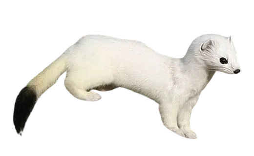

Animal Grimoire
Ermines
Symbolism
The ermine is a kind of stoat that makes its home in snowy country. Its fur is pure white except for a black tip at the end of its tail, a mark that spoils its otherwise flawless camouflage and leaves it an easy target. The beauty and dense softness of that pelt made it highly prized, and its rarity and cost turned the fur into a status symbol reserved for royalty, nobility, and the few members of the clergy wealthy enough to afford it.
Above all the ermine stands for purity. A medieval belief held that if the animal fell into muddy water and soiled its coat, it would freeze with shock and eventually die. From this it became an emblem of moral as well as physical purity, and those fortunate enough to wear its fur were thought to take on the same spotless qualities by association.